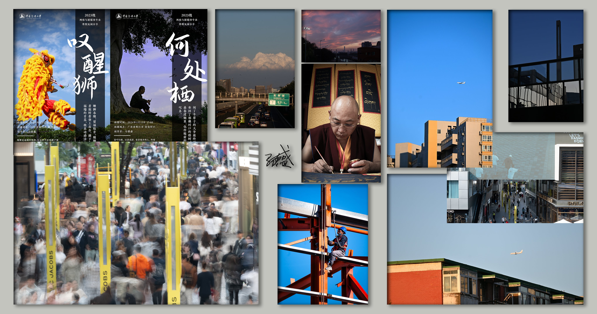
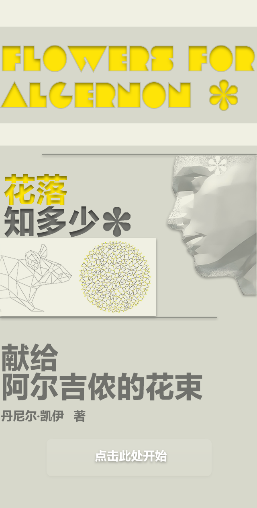

REC · 00:00:00
个人作品集 / PERSONAL REEL · 2023—2026
Lnterlink马德盛 · 愿做一切美好的信使
这里是我的作品集，
也是我的试错轨迹。
SCROLL TO ENTER THE REEL ↓
V1摄影 · 2023年秋至今
00:00:08 — 00:00:14DUR 06:00
01
在城市与田野中寻找希望。
一组贯穿 2023 秋至 2024 夏的纪实摄影：在城市与田野之间，寻找那些仍然值得被看见的瞬间。
[ IN 00:00:08

OUT 00:00:14 ]
V1图片设计 · 新春定制贺帖
00:00:14 — 00:00:19DUR 04:16
V2短片 · 风筝线的另一头
00:00:22 — 00:00:30DUR 07:16
03
新媒体向 · 脚本 / 拍摄 / 剪辑 / 动画
《风筝线的另一头》——一次完整的动画向的短片创作，运用最新的AI工作流。
[ INOUT ]
V2短片 · 长河星光——顾宪成
00:00:30 — 00:00:38DUR 07:12
04
V2短片 · 呐罕 8772乐队片花
00:00:38 — 00:00:46DUR 07:12
05
纪实向 · 呐罕
纪实向作品《呐罕》——8772 乐队片花，记录一群人的发声。
[ INOUT ]
V2短片 · AI agent 学生画像调查
00:00:46 — 00:00:54DUR 07:12
06
新闻调查向 · AI agent 学生画像
新闻调查向作品《AI agent 学生画像调查》——当agent进入校园。
[ INOUT ]
V2短片 · 回忆火车
00:00:54 — 00:01:02DUR 07:12
07
纪实向 · 回忆火车
纪实向短片创作：把一段正在远去的记忆，放在能看见的地方。
[ INOUT ]
V2短片 · 清澈
00:01:02 — 00:01:10DUR 07:12
08
纪实向 · 清澈
纪实向短片创作：清澈不是一种水质，是一种立场。
[ INOUT ]
V2短片 · 《路边野餐》预告片剪辑
00:01:10 — 00:01:18DUR 07:12
09
预告片剪辑 · 路边野餐
《路边野餐》预告片剪辑练习——三幕式结构、冷开场与彩蛋的实战拆解。
[ INOUT ]
V2短片 · 北京南站爱心服务区节前采访
00:01:18 — 00:01:26DUR 07:12
10
纪实向 · 北京南站节前采访
对北京南站爱心服务区的节前采访——在春运的人流里，记录一份仍在运转的善意。
[ INOUT ]
V3HTML5 交互设计 · 波斯毯 千年谈
00:01:30 — 00:01:42DUR 12:00
11
V3沉浸式阅读 · 花落知多少——《献给阿尔吉侬的花束》导读
00:01:42 — 00:01:54DUR 12:00
12
沉浸式阅读 · 花落知多少
《献给阿尔吉侬的花束》导读——使用方正飞翔创作，参与 2025 年第 13 届全国大学生新媒体创意大赛。

沉浸式阅读体验设计。点击进入浏览。
浏览《献给阿尔吉侬的花束》导读 ↗END
这里是我的作品集，
也是我的试错轨迹。
END OF REEL00:02:20:00